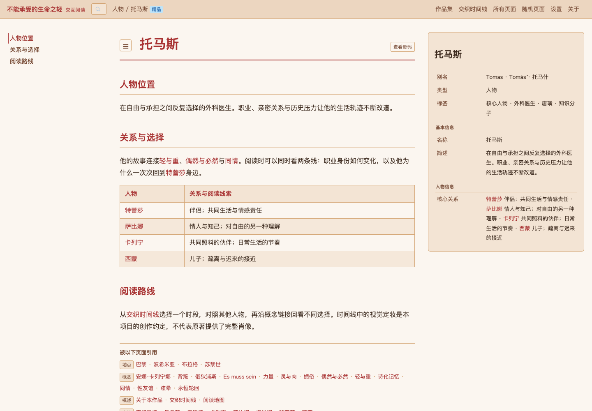
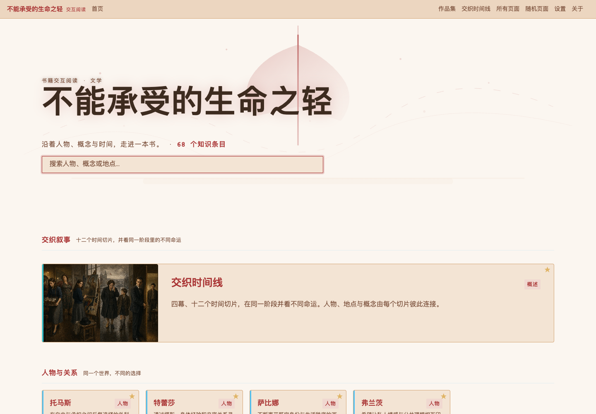
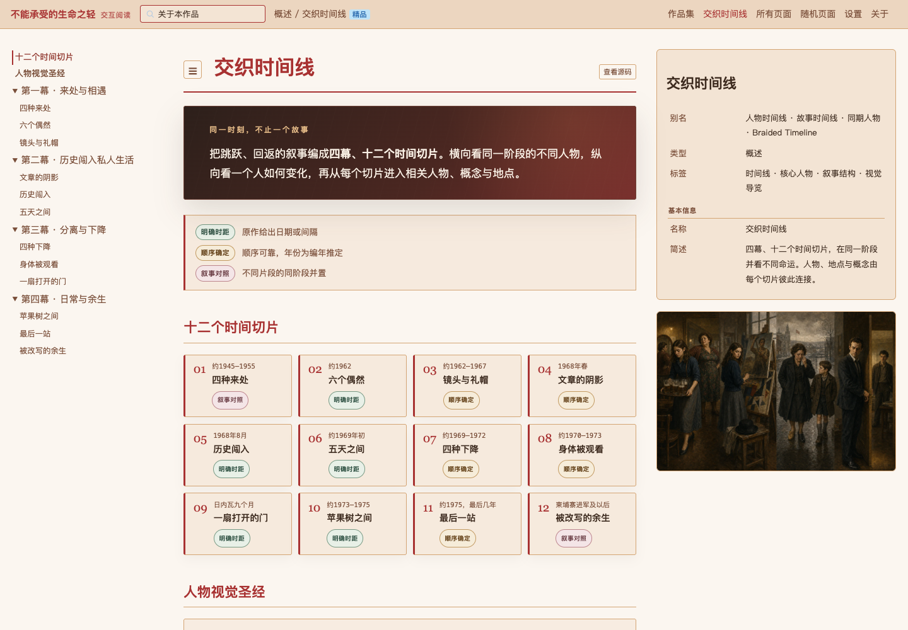
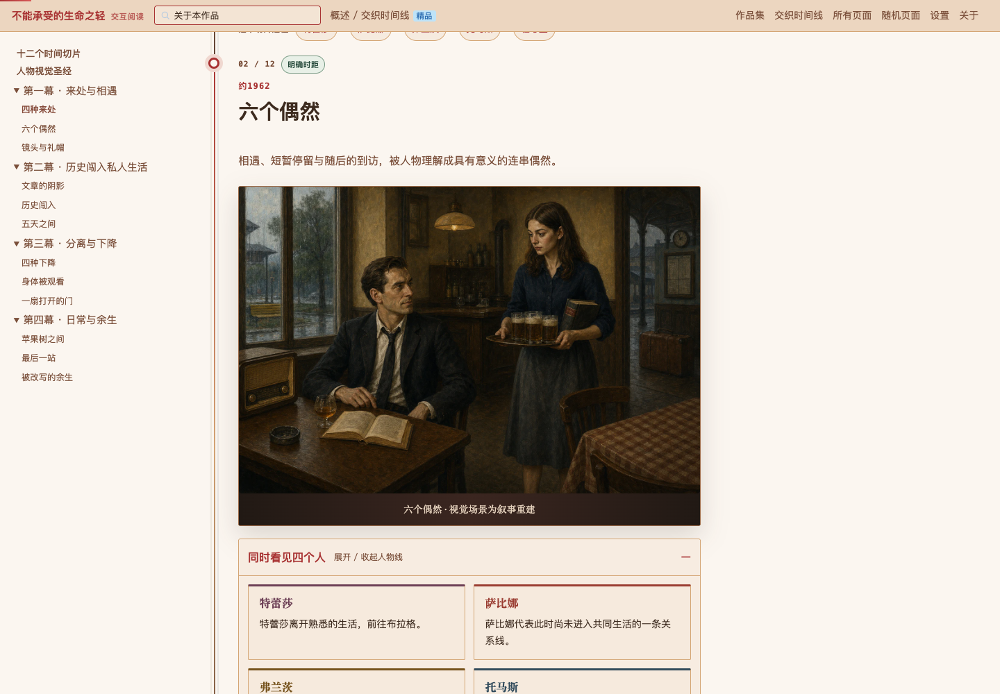
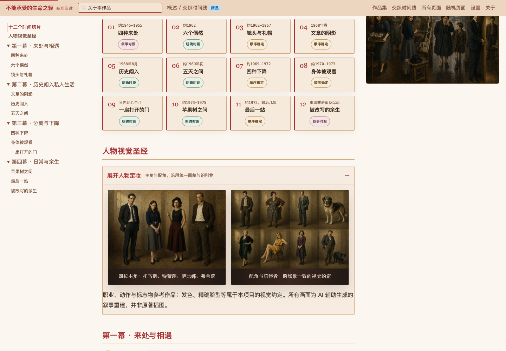

01
人物放在关系里理解
人物页把相关人物、事件与概念放在一起。从托马斯出发，可以沿关系进入特蕾莎，也可以继续查看“轻与重”等概念。
设计重点：每次查找之后，都有一条自然的继续阅读路径。

蔡睿麟 / 内容设计与交互阅读
从人物、概念和事件出发，把线性的书页组织成相互连接的阅读路径。这里收录四个书籍项目，并展开一个案例的制作过程。
查看完整案例 ↓01 / 完整案例

这本小说的叙事不断回返：同一段关系，会从不同人物的视角被重新讲述。单纯按章节做摘要，难以看清人物之间的联系，也不方便比较同一时期的不同选择。
我把人物、概念、地点和事件拆成可互相跳转的词条，再补上四幕、十二个时间切片。读者既能查一个概念，也能沿人物关系和时间线继续探索。
制作过程
按章节建立定位，整理人物、关系与事件。将原作明确事实和需要推定的时间顺序分开记录。
给人物、概念、地点和事件设置类型、别名及关联。让每个词条都能通向相关内容。
用四幕十二个切片并置四条人物线，标明哪些时间关系有依据，哪些只是阅读上的对照。
先确定人物识别特征，再制作场景图；调整页面与导航，并整理适合公开展示的内容。
三个设计选择
人物页把相关人物、事件与概念放在一起。从托马斯出发，可以沿关系进入特蕾莎，也可以继续查看“轻与重”等概念。
设计重点：每次查找之后，都有一条自然的继续阅读路径。

时间线同时保留托马斯、特蕾莎、萨比娜、弗兰茨四条路径。用“明确时距”“顺序确定”“叙事对照”区分不同证据强度，避免把并置误写成同日发生。
设计重点：重组阅读顺序，同时保留事实与解释的边界。

先确定角色的识别特征与常用物件，再制作十二幅场景图。人物职业与标志物参考原作；发色、精确脸型和部分场景并置属于视觉创作。
设计重点：让不同画面中的人物可以辨认，并说明创作设定。


知识结构设计、人物与叙事组织、视觉一致性、内容校核，以及本地页面定制和展示交付。实现过程中与 Claude Code / Codex 协作，叙事视觉使用 AI 辅助生成。
Wiki 的路由、Markdown 渲染、检索与插件机制来自 Memex。这个案例主要展示我如何把具体书籍内容组织成阅读产品。
查看内容与来源说明 ↗同系列作品
直接进入各自的阅读体验。
从不同的书，尝试不同的阅读组织方式。
体验完整案例 ↗